Last updated: 2026-02-03
Checks: 7 0
Knit directory: DCM_snRNAseq/
This reproducible R Markdown analysis was created with workflowr (version 1.7.2). The Checks tab describes the reproducibility checks that were applied when the results were created. The Past versions tab lists the development history.
Great! Since the R Markdown file has been committed to the Git repository, you know the exact version of the code that produced these results.
Great job! The global environment was empty. Objects defined in the global environment can affect the analysis in your R Markdown file in unknown ways. For reproduciblity it’s best to always run the code in an empty environment.
The command set.seed(20240606) was run prior to running
the code in the R Markdown file. Setting a seed ensures that any results
that rely on randomness, e.g. subsampling or permutations, are
reproducible.
Great job! Recording the operating system, R version, and package versions is critical for reproducibility.
Nice! There were no cached chunks for this analysis, so you can be confident that you successfully produced the results during this run.
Great job! Using relative paths to the files within your workflowr project makes it easier to run your code on other machines.
Great! You are using Git for version control. Tracking code development and connecting the code version to the results is critical for reproducibility.
The results in this page were generated with repository version c88a9fa. See the Past versions tab to see a history of the changes made to the R Markdown and HTML files.
Note that you need to be careful to ensure that all relevant files for
the analysis have been committed to Git prior to generating the results
(you can use wflow_publish or
wflow_git_commit). workflowr only checks the R Markdown
file, but you know if there are other scripts or data files that it
depends on. Below is the status of the Git repository when the results
were generated:
Ignored files:
Ignored: .Rhistory
Ignored: .Rproj.user/
Ignored: output/CellChat/
Ignored: output/Cell_cell_communication_Macrophages/
Ignored: output/Chaffin_2022/
Ignored: output/Comparison_RV_bulk_RNAseq/
Ignored: output/Koenig_2022/
Ignored: output/SSc_PAH/
Ignored: output/Variance_partitioning/
Untracked files:
Untracked: .Rprofile
Untracked: Chaffin_wilcox.csv
Untracked: GRCh38-2020-A_build/
Untracked: Koenig_wilcox.csv
Untracked: Pseudobulk_all.csv
Untracked: Pseudobulk_byCellType_wilcox.csv
Untracked: analysis/Chaffin_2022.Rmd
Untracked: analysis/Check_IMC_panel.Rmd
Untracked: analysis/Comparison_RV_bulk_RNAseq.Rmd
Untracked: analysis/DE_Fibrosis_fibroblasts.Rmd
Untracked: analysis/DE_Group_all_cell_types.Rmd
Untracked: analysis/EC_capillary_angiogenic_boxplot_stats.csv
Untracked: analysis/Endothelial_cells_Koenig_Reichart.rmd
Untracked: analysis/Endothelial_cells_SGLT2_I.Rmd
Untracked: analysis/Fibroblasts_DA_DE_26.Rmd
Untracked: analysis/Genes_Luxembourg.Rmd
Untracked: analysis/HC_DEGs_clustering.Rmd
Untracked: analysis/Koenig_2022.Rmd
Untracked: analysis/Lymphocytes_subclustering.Rmd
Untracked: analysis/Macrophages_subclustering.Rmd
Untracked: analysis/Mass_Spec_RV_dysf.Rmd
Untracked: analysis/Mural_cells_subclustering.Rmd
Untracked: analysis/Olink_RV_dysf.Rmd
Untracked: analysis/Olink_SSc_PAH.Rmd
Untracked: analysis/Olink_SSc_PAH_draft.Rmd
Untracked: analysis/Pseudobulk_all.csv
Untracked: analysis/Pseudobulk_byCellType_facetGrid.pdf
Untracked: analysis/Pseudobulk_byCellType_filtered_wrap3col.pdf
Untracked: analysis/Pseudobulk_byCellType_filtered_wrap3col_proportional.pdf
Untracked: analysis/Pseudobulk_byCellType_wilcox.csv
Untracked: analysis/Pseudobulk_byCellType_wilcox.filtered.csv
Untracked: analysis/Reichart_wilcox.csv
Untracked: analysis/Selection_genes_histology.Rmd
Untracked: analysis/TOM/
Untracked: analysis/UntitledR.R
Untracked: analysis/VennDiagram.2024-09-16_14-12-56.160498.log
Untracked: analysis/VennDiagram.2024-09-16_14-13-17.340014.log
Untracked: analysis/VennDiagram.2024-09-16_14-13-57.942673.log
Untracked: analysis/VennDiagram.2024-09-16_14-22-50.621507.log
Untracked: analysis/VennDiagram.2024-09-16_14-24-47.010131.log
Untracked: analysis/VennDiagram.2024-09-18_11-22-29.278827.log
Untracked: analysis/VennDiagram.2025-03-25_17-41-35.50458.log
Untracked: analysis/VennDiagram.2025-03-25_17-41-41.199096.log
Untracked: analysis/VennDiagram.2025-03-25_17-41-59.64245.log
Untracked: analysis/VennDiagram.2025-03-25_17-45-11.922474.log
Untracked: analysis/VennDiagram.2025-03-25_17-50-36.483812.log
Untracked: analysis/VennDiagram.2025-03-25_17-56-46.244322.log
Untracked: analysis/VennDiagram.2025-03-25_17-58-30.74362.log
Untracked: analysis/VennDiagram.2025-03-26_15-54-09.244636.log
Untracked: analysis/VennDiagram.2025-06-11_14-53-30.499963.log
Untracked: analysis/ec_Reichart_logCPM.csv
Untracked: analysis/omnipathr-log/
Untracked: code/Add_metadata.R
Untracked: code/Check DYSF.R
Untracked: code/Clustering_genes.R
Untracked: code/DE_5_percent.Rmd
Untracked: code/DE_5_percent.html
Untracked: code/DE_5_percent/
Untracked: code/DE_CM_test1.R
Untracked: code/DE_no_401.Rmd
Untracked: code/DE_no_401.html
Untracked: code/DE_no_401/
Untracked: code/Differential abundance test1.R
Untracked: code/Differential_Expression_edgeR_All.Rmd
Untracked: code/Differential_Expression_edgeR_All_2.Rmd
Untracked: code/Differential_Expression_edgeR_All_2.html
Untracked: code/Differential_Expression_edgeR_All_Age.Rmd
Untracked: code/Differential_Expression_edgeR_All_Age_2.Rmd
Untracked: code/Differential_Expression_edgeR_All_Age_2.html
Untracked: code/Differential_Expression_edgeR_All_groups.Rmd
Untracked: code/Differential_Expression_edgeR_All_groups.html
Untracked: code/Differential_Expression_edgeR_All_groups_2.Rmd
Untracked: code/Differential_Expression_edgeR_All_groups_2.html
Untracked: code/Differential_Expression_edgeR_All_groups_3.Rmd
Untracked: code/Differential_Expression_edgeR_All_groups_3.html
Untracked: code/PCA and CCA analysis test.R
Untracked: code/Pseudobulk DCM HC.R
Untracked: code/Published_heart_datasets_RV_vs_LV.Rmd
Untracked: code/QC_integration_annotation_orig.Rmd
Untracked: code/Removed_chunks.Rmd
Untracked: code/UpSet_plot_DEGs.Rmd
Untracked: code/Volcano_highlighted_genes.R
Untracked: code/ezInteractiveTable.Rmd
Untracked: code/ezInteractiveTable.html
Untracked: code/old.R
Untracked: data/Cellbender_output/
Untracked: data/Cellranger_output/
Untracked: data/DCM_Clinical_data.xlsx
Untracked: data/DCM_Clinical_data_26.xlsx
Untracked: data/DCM_Clinical_data_30.xlsx
Untracked: data/HMEC_RNAseq/
Untracked: data/Heart_specific_proteome.xlsx
Untracked: data/Homo_sapiens.GRCh38.93.gtf
Untracked: data/Human_plasma_proteome.xlsx
Untracked: data/Massons_quantification.xlsx
Untracked: data/Published_datasets/
Untracked: data/Raw/
Untracked: data/SSc-PAH/
Untracked: data/gencode.v46.chr_patch_hapl_scaff.annotation.gtf
Untracked: data/gencode.v46.chr_patch_hapl_scaff.basic.annotation.gtf
Untracked: data/refdata-gex-GRCh38-2020-A/
Untracked: omnipathr-log/
Untracked: output/Biomarkers_selection/
Untracked: output/CM_lncRNAs/
Untracked: output/Cardiomyocytes_DA_DE/
Untracked: output/Cardiomyocytes_subclustering/
Untracked: output/Cardiomyocytes_subclustering_26/
Untracked: output/Cell_cell_communication/
Untracked: output/Cell_cell_communication_LV/
Untracked: output/Cell_cell_communication_LV2/
Untracked: output/Cell_cycle/
Untracked: output/Check_IMC_panel/
Untracked: output/Comparison_LV/
Untracked: output/DA_DE_all_cell_types_and_parameters/
Untracked: output/DE_Fibrosis_all_cell_types/
Untracked: output/DE_Fibrosis_fibroblasts/
Untracked: output/DE_Group_all_cell_types/
Untracked: output/DE_all_cell_types_mPAP/
Untracked: output/DE_mPAP_all_cell_types/
Untracked: output/Differential_expression_edgeR_All/
Untracked: output/Differential_expression_edgeR_All_Age/
Untracked: output/Dysferlin/
Untracked: output/Endothelial_cells_Koenig_Reichart/
Untracked: output/Endothelial_cells_SGLT2_I/
Untracked: output/Endothelial_cells_published_datasets/
Untracked: output/Endothelial_cells_subclustering/
Untracked: output/Fibroblasts_DA_DE_26/
Untracked: output/Fibroblasts_subclustering/
Untracked: output/Figures_manuscript/
Untracked: output/Genes_Luxembourg/
Untracked: output/HC_DEGs_clustering/
Untracked: output/HMEC/
Untracked: output/LV_Klaudia/
Untracked: output/LV_datasets_DCM_vs_HC/
Untracked: output/Lymphocytes_subclustering/
Untracked: output/Macrophages_subclustering/
Untracked: output/Mass_Spec_RV_dysf/
Untracked: output/Mural_cells_subclustering/
Untracked: output/Olink_RV_dysf/
Untracked: output/Olink_SSc_PAH/
Untracked: output/Olink_SSc_PAH_draft/
Untracked: output/QC_integration_annotation/
Untracked: output/Reichart_DE_DCMvsHC/
Untracked: output/Selection_genes_histology/
Untracked: output/UntitledR.R
Untracked: redsfewfref.R
Untracked: reference_sources/
Untracked: renv.lock
Untracked: renv/
Unstaged changes:
Modified: analysis/CM_lncRNAs.Rmd
Modified: analysis/Cardiomyocytes_DA_DE.Rmd
Modified: analysis/Cell_cycle.Rmd
Modified: analysis/Comparison_LV.Rmd
Modified: analysis/DE_Fibrosis_all_cell_types.Rmd
Deleted: analysis/Differential_Expression_edgeR_All.Rmd
Deleted: analysis/Differential_Expression_edgeR_All_Age.Rmd
Modified: analysis/Endothelial_cells_published_datasets.rmd
Modified: analysis/Endothelial_cells_subclustering.Rmd
Modified: analysis/Figures_manuscript.Rmd
Modified: analysis/Genes_Luxembourg_2.Rmd
Modified: analysis/LV_Klaudia.Rmd
Modified: analysis/Reichart_DE_DCMvsHC.Rmd
Modified: analysis/SSc_PAH.Rmd
Modified: analysis/_site.yml
Note that any generated files, e.g. HTML, png, CSS, etc., are not included in this status report because it is ok for generated content to have uncommitted changes.
These are the previous versions of the repository in which changes were
made to the R Markdown (analysis/HMEC.Rmd) and HTML
(docs/HMEC.html) files. If you’ve configured a remote Git
repository (see ?wflow_git_remote), click on the hyperlinks
in the table below to view the files as they were in that past version.
| File | Version | Author | Date | Message |
|---|---|---|---|---|
| Rmd | c88a9fa | GinoBonazza | 2026-02-03 | wflow_publish("analysis/HMEC.Rmd") |
Setup
# Get current file name to make folder
current_file <- "HMEC"
# Load libraries
library(here)
library(readr)
library(readxl)
library(Seurat)
library(DropletUtils)
library(Matrix)
library(scDblFinder)
library(scCustomize)
library(dplyr)
library(ggplot2)
library(magrittr)
library(tidyverse)
library(reshape2)
library(S4Vectors)
library(SingleCellExperiment)
library(pheatmap)
library(png)
library(gridExtra)
library(knitr)
library(scales)
library(RColorBrewer)
library(Matrix.utils)
library(tibble)
library(ggplot2)
library(scater)
library(patchwork)
library(statmod)
library(clustree)
library(harmony)
library(gprofiler2)
library(clusterProfiler)
library(org.Hs.eg.db)
library(AnnotationHub)
library(ReactomePA)
library(edgeR)
library(limma)
library(reactable)
library(decoupleR)
library(OmnipathR)
library(dorothea)
library(enrichplot)
library(DOSE)
#Output paths
output_dir_data <- here::here("output", current_file)
if (!dir.exists(output_dir_data)) dir.create(output_dir_data)
if (!dir.exists(here::here("docs", "figure"))) dir.create(here::here("docs", "figure"))
output_dir_figs <- here::here("docs", "figure", paste0(current_file, ".Rmd"))
if (!dir.exists(output_dir_figs)) dir.create(output_dir_figs)# 1) Counts
counts <- read_tsv(here::here("data", "HMEC_RNAseq", "salmon.merged.gene_counts.tsv"),
col_types = cols()
)
# Inspect structure
head(counts)[, 1:5]# A tibble: 6 × 5
gene_id gene_name FRC_FE4_0001_P01_V11_S1 FRC_FE4_0002_P01_V11_S2
<chr> <chr> <dbl> <dbl>
1 ENSG00000000003 TSPAN6 283 328
2 ENSG00000000005 TNMD 0 0
3 ENSG00000000419 DPM1 340. 411.
4 ENSG00000000457 SCYL3 114 109
5 ENSG00000000460 C1orf112 82.0 158
6 ENSG00000000938 FGR 2 7
# ℹ 1 more variable: FRC_FE4_0003_P01_V11_S3 <dbl># Set gene IDs as rownames and drop the first column
gene_col <- colnames(counts)[2]
counts_mat <- as.matrix(counts[ , -c(1,2)])
rownames(counts_mat) <- counts[[gene_col]]
# Make sure counts are numeric
storage.mode(counts_mat) <- "numeric"meta <- read_excel(here::here("data", "HMEC_RNAseq", "FRolski_sample_group_ID.xlsx"))
# Check what columns you actually have
colnames(meta)[1] "Seq_ID" "Sample" "Group" head(meta)# A tibble: 6 × 3
Seq_ID Sample Group
<chr> <chr> <chr>
1 FRC_FE4_0001_P01_V11_S1 CZD10 HC
2 FRC_FE4_0002_P01_V11_S2 CZD12 HC
3 FRC_FE4_0003_P01_V11_S3 LV68 HF
4 FRC_FE4_0004_P01_V11_S4 LV69 HF
5 FRC_FE4_0005_P01_V11_S5 HT20 HF
6 FRC_FE4_0006_P01_V11_S6 HT25 HF colnames(counts_mat) == meta$Seq_ID [1] TRUE TRUE TRUE TRUE TRUE TRUE TRUE TRUE TRUE TRUE TRUE TRUE TRUE TRUE TRUE
[16] TRUEcolnames(counts_mat) <- meta$Samplegroup <- factor(meta$Group)
y <- DGEList(
counts = counts_mat,
samples = meta
)
y$samples$group <- group# How many per group?
table(group)group
HC HF
8 8 keep <- filterByExpr(y, group = group, min.count = 20)
y <- y[keep, , keep.lib.sizes = FALSE]
dim(y)[1] 13240 16y <- calcNormFactors(y)
# quick check
y$samples group lib.size norm.factors Seq_ID Sample Group
CZD10 HC 15773596 0.9707874 FRC_FE4_0001_P01_V11_S1 CZD10 HC
CZD12 HC 16292428 1.0102855 FRC_FE4_0002_P01_V11_S2 CZD12 HC
LV68 HF 15269713 1.0005632 FRC_FE4_0003_P01_V11_S3 LV68 HF
LV69 HF 15293132 1.0129525 FRC_FE4_0004_P01_V11_S4 LV69 HF
HT20 HF 16664706 0.9562640 FRC_FE4_0005_P01_V11_S5 HT20 HF
HT25 HF 17542487 1.0112184 FRC_FE4_0006_P01_V11_S6 HT25 HF
CZD20 HC 16656007 1.0521486 FRC_FE4_0007_P01_V11_S7 CZD20 HC
LV42 HF 17752853 0.9660134 FRC_FE4_0008_P01_V11_S8 LV42 HF
CZD23 HC 17264981 0.9734530 FRC_FE4_0009_P01_V11_S9 CZD23 HC
CZD14 HC 18203527 0.9758507 FRC_FE4_0010_P01_V11_S10 CZD14 HC
CZD19 HC 16451852 1.0327105 FRC_FE4_0011_P01_V11_S11 CZD19 HC
CZD15 HC 16060092 1.0382443 FRC_FE4_0012_P01_V11_S12 CZD15 HC
LV66 HF 15748346 0.9936268 FRC_FE4_0013_P01_V11_S13 LV66 HF
LV65 HF 14756418 1.0280381 FRC_FE4_0014_P01_V11_S14 LV65 HF
LV44 HF 17024464 0.9714933 FRC_FE4_0015_P01_V11_S15 LV44 HF
CZD22 HC 17298021 1.0126660 FRC_FE4_0016_P01_V11_S16 CZD22 HCplotMDS(y, labels = meta$Sample, col = as.numeric(group))
legend("bottomright", legend = levels(group), col = 1:length(levels(group)), pch = 16)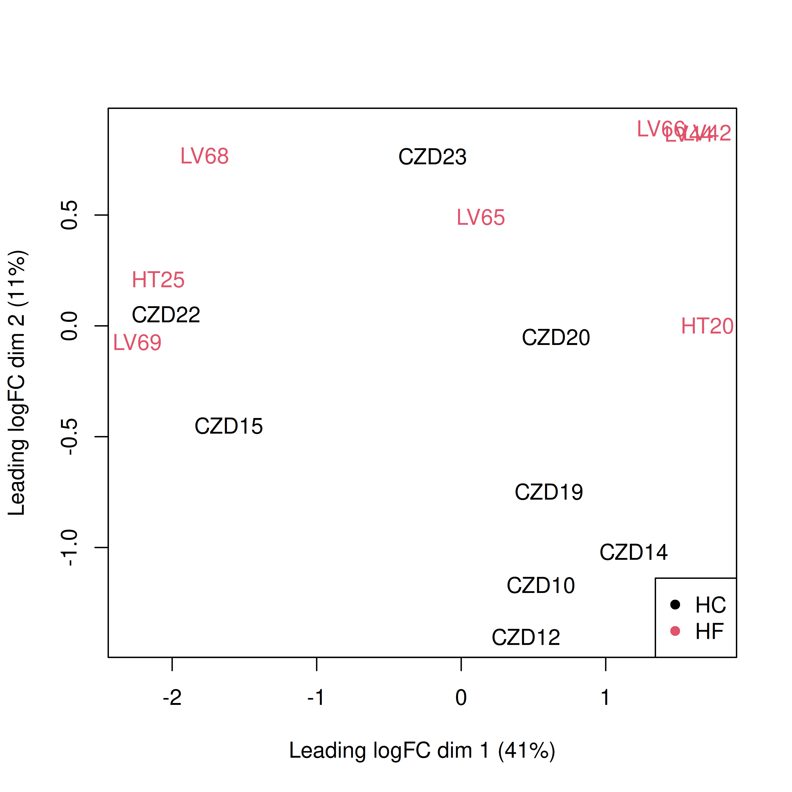
logcpm <- cpm(y, log = TRUE, prior.count = 1)
pr <- prcomp(t(logcpm), scale. = FALSE)
pve <- (pr$sdev^2) / sum(pr$sdev^2) * 100
cols <- as.numeric(group)
plot(
pr$x[, 1], pr$x[, 2],
col = cols,
pch = 16,
xlab = paste0("PC1 (", round(pve[1], 1), "%)"),
ylab = paste0("PC2 (", round(pve[2], 1), "%)"),
main = "PCA"
)
text(
pr$x[, 1], pr$x[, 2],
labels = meta$Sample,
pos = 3, # text above points
cex = 0.8
)
legend(
"topright",
legend = levels(group),
col = seq_along(levels(group)),
pch = 16,
bty = "n"
)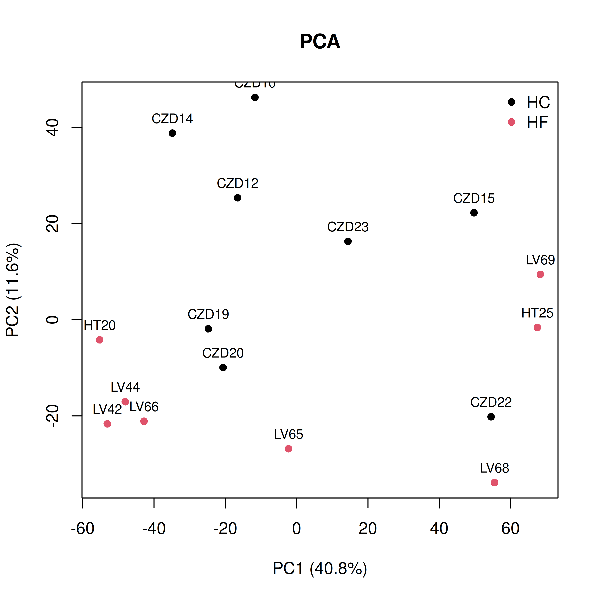
levels(group)[1] "HC" "HF"group <- relevel(group, ref = "HC")
y$samples$group <- group
design <- model.matrix(~ 0 + group)
colnames(design) <- levels(group)
design HC HF
1 1 0
2 1 0
3 0 1
4 0 1
5 0 1
6 0 1
7 1 0
8 0 1
9 1 0
10 1 0
11 1 0
12 1 0
13 0 1
14 0 1
15 0 1
16 1 0
attr(,"assign")
[1] 1 1
attr(,"contrasts")
attr(,"contrasts")$group
[1] "contr.treatment"# Example: Treatment vs Control
contrast <- makeContrasts(
HF_vs_HC = HF - HC,
levels = design
)
y <- estimateDisp(y, design)
plotBCV(y)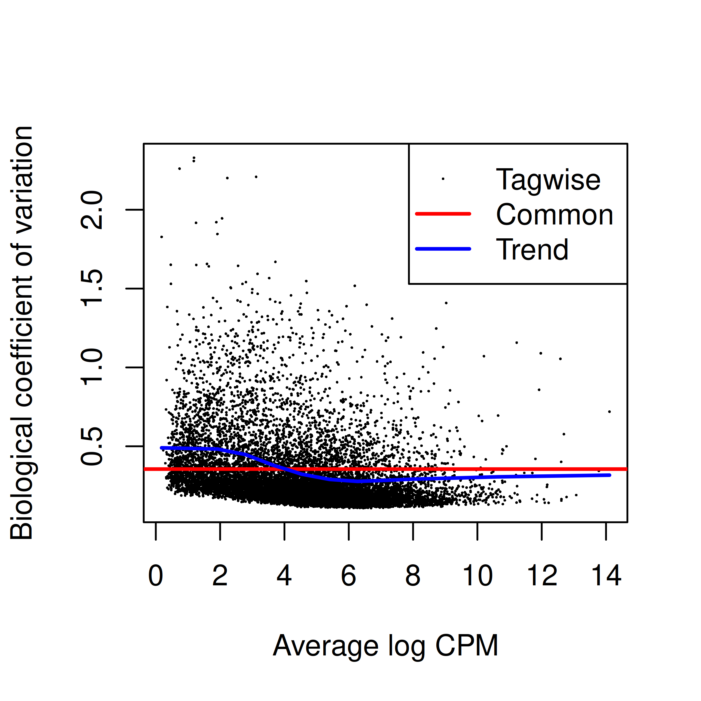
fit <- glmQLFit(y, design)
qlf <- glmQLFTest(fit, contrast = contrast)
res <- topTags(qlf, n = Inf)$table
head(res) logFC logCPM F PValue FDR
MICALL2 0.5096581 6.987840 31.95882 3.328284e-05 0.184867
INHBA -2.1997586 4.561254 30.67229 4.175390e-05 0.184867
CAPNS1 0.3342041 8.323375 29.94402 4.759056e-05 0.184867
CEP170 -0.6625072 7.637206 27.66442 7.277066e-05 0.184867
HS6ST1 0.8326917 5.443959 27.60429 7.361338e-05 0.184867
MMP24-AS1 0.4591246 5.752212 26.83029 8.549664e-05 0.184867write.csv(
res,
file = here::here(output_dir_data, "edgeR_DE_Treatment_vs_Control_all_genes.csv"),
quote = FALSE,
row.names = TRUE
)res_df <- res %>%
mutate(
Gene = rownames(res),
negLogFDR = -log10(FDR),
sig = FDR < 0.05 & abs(logFC) > 0.05
)
ggplot(res_df, aes(x = logFC, y = negLogFDR)) +
geom_point(aes(color = sig), alpha = 0.7, size = 1.5) +
scale_color_manual(values = c("FALSE" = "grey70", "TRUE" = "red")) +
geom_hline(yintercept = -log10(0.05), linetype = "dashed") +
geom_vline(xintercept = c(-1, 1), linetype = "dashed") +
theme_minimal() +
labs(
title = "Volcano plot: HF vs HC",
x = "log2 fold change",
y = "-log10 FDR"
)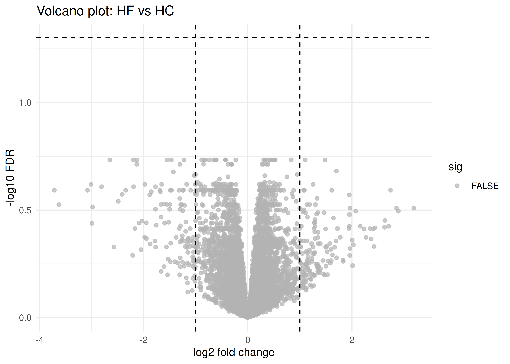
# Choose number of genes
n_top <- 500
logCPM <- cpm(y, log = TRUE, prior.count = 1)
var_genes <- apply(logCPM, 1, var)
top_genes <- names(sort(var_genes, decreasing = TRUE))[1:n_top]
mat <- logCPM
# Z-score per gene (row)
mat_z <- t(scale(t(mat)))
annotation_col <- data.frame(
Group = group,
row.names = colnames(mat_z)
)
pheatmap(
mat_z,
annotation_col = annotation_col,
show_rownames = FALSE,
cluster_cols = TRUE,
clustering_distance_rows = "euclidean",
clustering_distance_cols = "euclidean",
main = paste("All genes")
)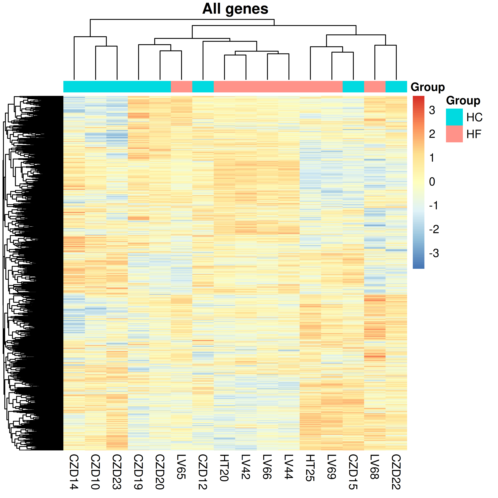
# Choose number of genes
n_top <- 500
logCPM <- cpm(y, log = TRUE, prior.count = 1)
var_genes <- apply(logCPM, 1, var)
top_genes <- names(sort(var_genes, decreasing = TRUE))[1:n_top]
mat <- logCPM[top_genes, ]
# Z-score per gene (row)
mat_z <- t(scale(t(mat)))
annotation_col <- data.frame(
Group = group,
row.names = colnames(mat_z)
)
pheatmap(
mat_z,
annotation_col = annotation_col,
show_rownames = FALSE,
cluster_cols = TRUE,
clustering_distance_rows = "euclidean",
clustering_distance_cols = "euclidean",
main = paste("Top", n_top, "variable genes")
)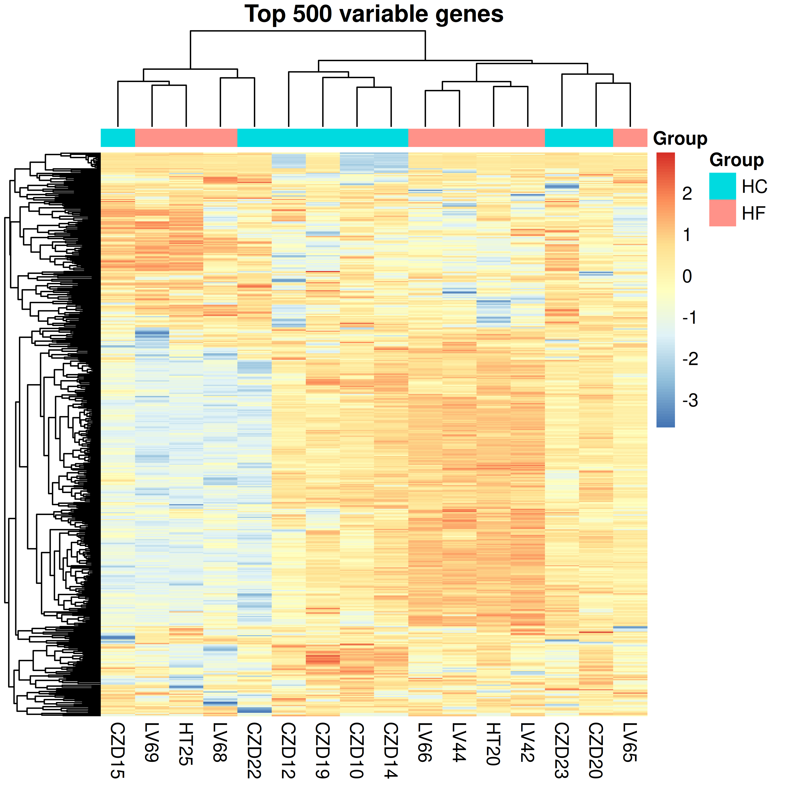
ec_fb_markers <- c("VWF", "PECAM1", "CDH5", "KDR", "ENG", "ESAM", "ST6GALNAC3", "PIK3R3","COL1A1", "VIM", "FN1", "POSTN", "NEBL", "NEGR1", "ACSM3", "DCN", "COL1A2","LUM","COL3A1","TAGLN","ACTA2")
markers_present <- ec_fb_markers[ec_fb_markers %in% rownames(logCPM)]
markers_present [1] "VWF" "PECAM1" "CDH5" "KDR" "ENG"
[6] "ESAM" "ST6GALNAC3" "PIK3R3" "COL1A1" "VIM"
[11] "FN1" "POSTN" "NEBL" "NEGR1" "ACSM3"
[16] "DCN" "COL1A2" "COL3A1" "TAGLN" "ACTA2" logCPM_markers <- logCPM[markers_present, , drop = FALSE]
# Small heatmap
pheatmap(
logCPM_markers,
annotation_col = annotation_col,
main = "Endothelial marker expression (log2-CPM)"
)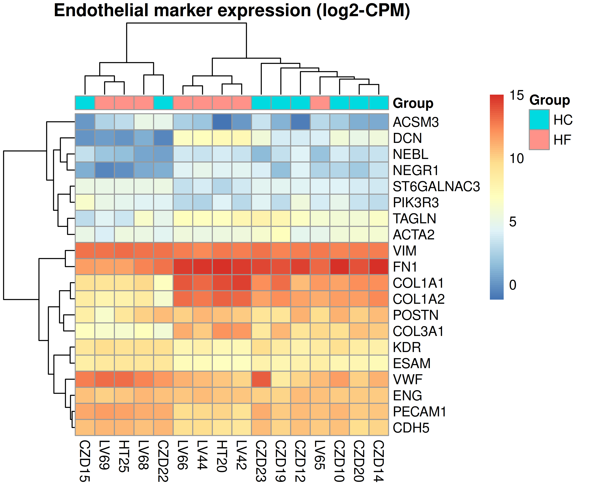
pc1_scores <- pr$x[, 1]
pc1_loadings <- pr$rotation[, 1]
top_n <- 25
top_pc1_genes <- names(sort(abs(pc1_loadings), decreasing = TRUE))[1:top_n]
top_pc1_genes [1] "TNFAIP6" "PDGFRA" "SERPINF1" "GPC6"
[5] "SERPINA3" "CNR1" "ADGRL3" "DCN"
[9] "DHRS9" "SEMA3C" "CXCL6" "PAPPA"
[13] "MSC" "MSC-AS1" "CDH20" "RP11-231C18.3"
[17] "CADM3" "IRS1" "FBLN1" "LPAR1"
[21] "GLI2" "TBX15" "LAMA2" "SVEP1"
[25] "CLIC3" # Expression matrix for those genes
mat_pc1 <- logCPM[top_pc1_genes, , drop = FALSE]
ord <- order(pc1_scores, decreasing = TRUE)
# column annotations: add Group + (optional) PC1
annotation_col2 <- annotation_col
annotation_col2$PC1 <- pc1_scores
pheatmap(
mat_pc1[, ord, drop = FALSE],
scale = "row",
annotation_col = annotation_col2[ord, , drop = FALSE],
show_colnames = TRUE,
main = "Top PC1 loading genes (row-scaled log2-CPM)"
)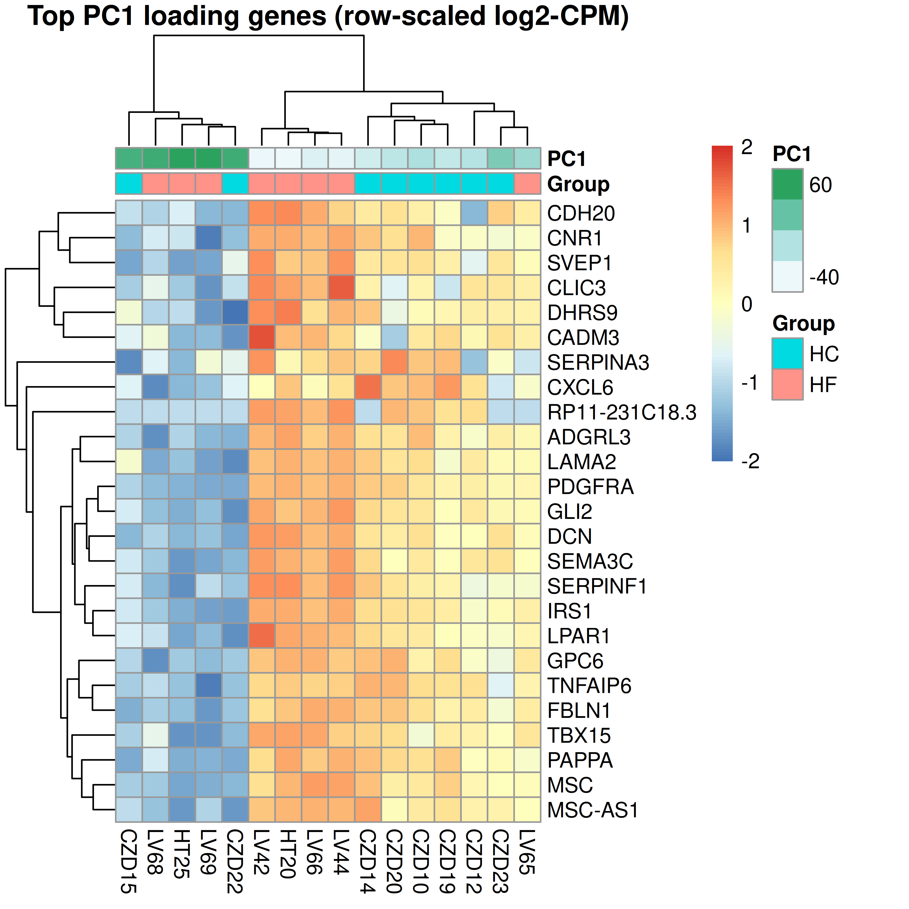
fb_markers <- c("COL1A1","COL1A2","DCN","LUM","COL3A1","TAGLN","ACTA2","POSTN","FN1", "NEGR1")
fb_present <- intersect(fb_markers, rownames(logCPM))
fb_score <- colMeans(logCPM[fb_present, , drop = FALSE], na.rm = TRUE)
ct <- cor.test(pc1_scores, fb_score, method = "spearman")
ct
Spearman's rank correlation rho
data: pc1_scores and fb_score
S = 1314, p-value < 2.2e-16
alternative hypothesis: true rho is not equal to 0
sample estimates:
rho
-0.9323529 plot(
pc1_scores, fb_score,
pch = 16,
col = as.numeric(group),
xlab = "PC1 score",
ylab = "Fibroblast marker score (mean log2-CPM)"
)
legend(
"bottomleft",
legend = levels(group),
col = seq_along(levels(group)),
pch = 16,
bty = "n"
)
text(
pc1_scores, fb_score,
labels = meta$Sample,
pos = 3,
cex = 0.7
)
# add correlation text
txt <- paste0(
"Spearman r = ", round(ct$estimate, 2),
"\nP = ", formatC(ct$p.value, format = "e", digits = 2)
)
usr <- par("usr")
text(
x = usr[2] - 0.05 * diff(usr[1:2]),
y = usr[4] - 0.05 * diff(usr[3:4]),
labels = txt,
adj = c(-0.2, 0.6),
cex = 0.9,
bg = "white"
)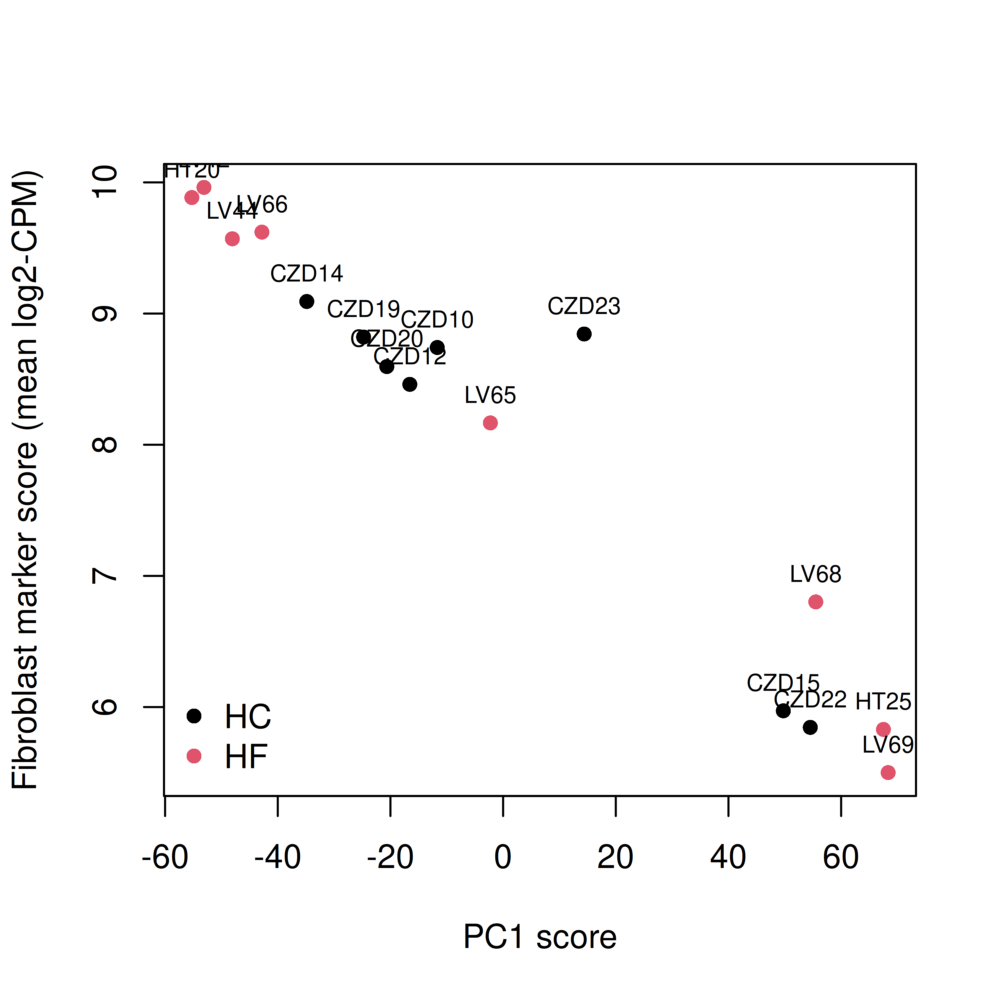
annotation_col2$fb_score <- fb_scoreec_markers <- c("VWF","PECAM1","CDH5","KDR","ENG","ESAM","ST6GALNAC3","PIK3R3")
mix_markers <- unique(c(ec_markers, fb_markers))
mix_present <- intersect(mix_markers, rownames(logCPM))
pheatmap(
logCPM[mix_present, ord, drop = FALSE],
scale = "row",
annotation_col = annotation_col2[ord, , drop = FALSE],
main = "Endothelial and fibroblast markers (row-scaled log2-CPM)"
)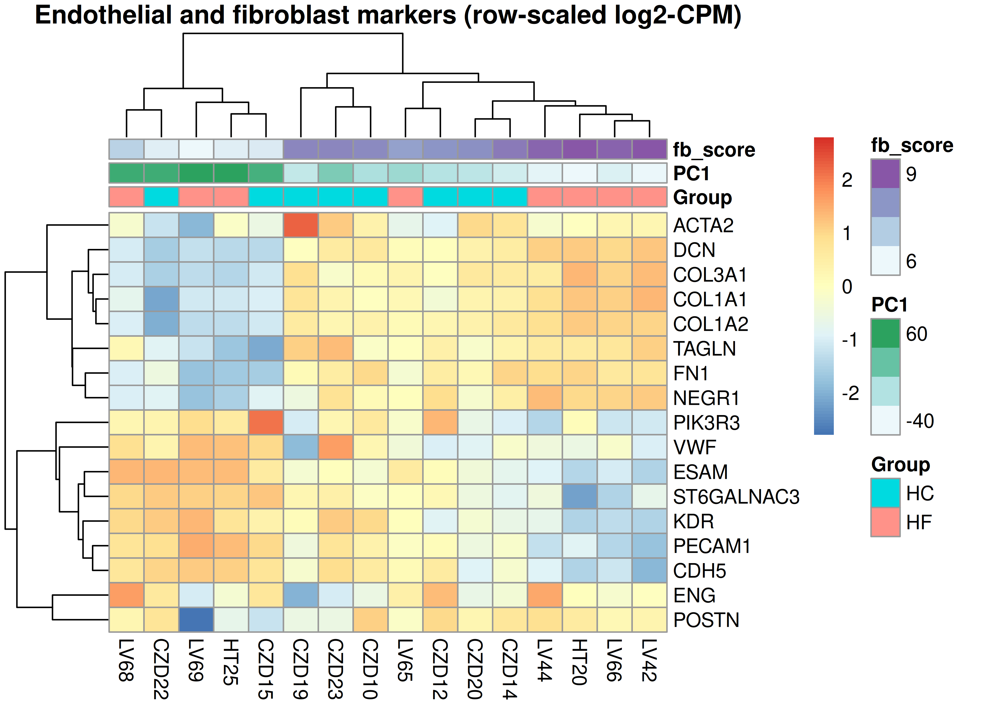
ec_markers <- c("VWF","PECAM1","CDH5","KDR","ENG","ESAM","ST6GALNAC3","PIK3R3")
ec_present <- intersect(ec_markers, rownames(logCPM))
ec_score <- colMeans(logCPM[ec_present, , drop = FALSE], na.rm = TRUE)
ct2 <- cor.test(ec_score, fb_score, method = "spearman")
ct2
Spearman's rank correlation rho
data: ec_score and fb_score
S = 1292, p-value < 2.2e-16
alternative hypothesis: true rho is not equal to 0
sample estimates:
rho
-0.9 plot(
ec_score, fb_score,
pch = 16,
col = as.numeric(group),
xlab = "Endothelial marker score (mean log2-CPM)",
ylab = "Fibroblast marker score (mean log2-CPM)"
)
legend(
"bottomleft",
legend = levels(group),
col = seq_along(levels(group)),
pch = 16,
bty = "n"
)
text(
ec_score, fb_score,
labels = meta$Sample,
pos = 3,
cex = 0.7
)
txt2 <- paste0(
"Spearman r = ", round(ct2$estimate, 2),
"\nP = ", formatC(ct2$p.value, format = "e", digits = 2)
)
usr <- par("usr")
text(
x = usr[2] - 0.05 * diff(usr[1:2]),
y = usr[4] - 0.05 * diff(usr[3:4]),
labels = txt2,
adj = c(1, 0.6),
cex = 0.9,
bg = "white"
)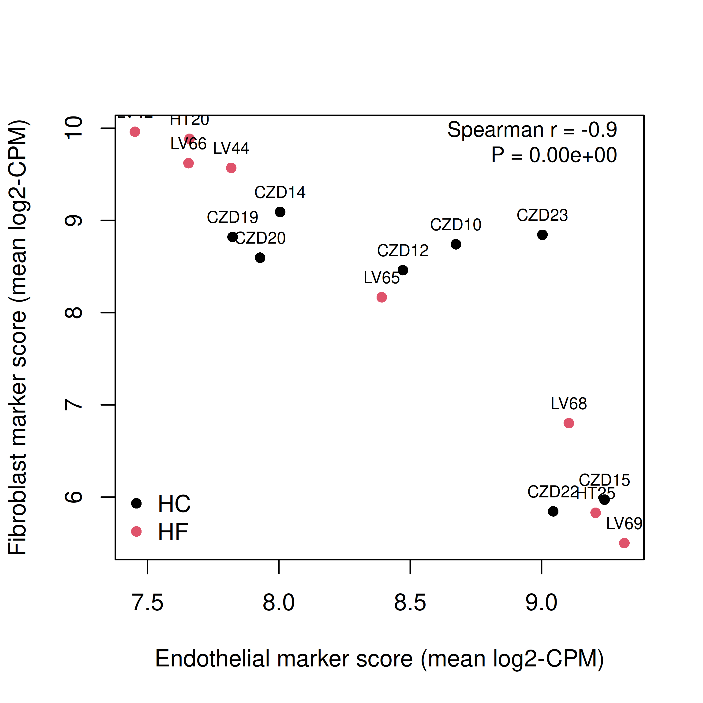
DCM_RV <- readRDS(here::here("output", "QC_integration_annotation", "DCM_RV_integrated.rds"))
DefaultAssay(DCM_RV) <- "RNA"
DCM_RV <- NormalizeData(DCM_RV)
DCM_RV <- DCM_RV[, sample(colnames(DCM_RV), size =20000, replace=F)]DotPlot_scCustom(
seurat_object = DCM_RV,
features = top_pc1_genes,
group.by = "cell_type",
dot.scale = 6
) +
RotatedAxis() +
scale_y_discrete(limits = rev) +
theme_classic(base_size = 11) +
theme(
axis.text.x = element_text(angle = 45, hjust = 1),
axis.title = element_text(face = "bold"),
plot.title = element_text(face = "bold")
) +
labs(
title = "Top PC1 genes across cardiac cell types",
x = NULL,
y = NULL
)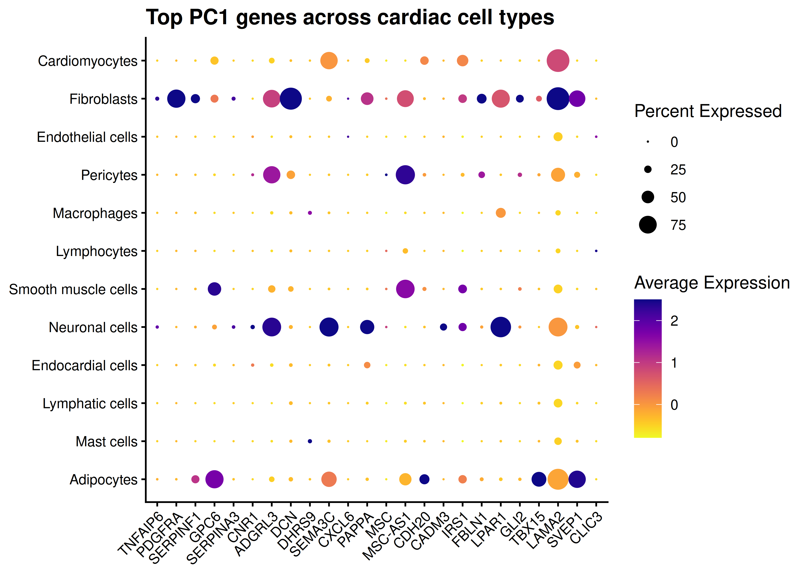
DotPlot_scCustom(
seurat_object = DCM_RV,
features = ec_fb_markers,
group.by = "cell_type",
dot.scale = 6
) +
RotatedAxis() +
scale_y_discrete(limits = rev) +
theme_classic(base_size = 11) +
theme(
axis.text.x = element_text(angle = 45, hjust = 1),
axis.title = element_text(face = "bold"),
plot.title = element_text(face = "bold")
) +
labs(
title = "Top PC1 genes across cardiac cell types",
x = NULL,
y = NULL
)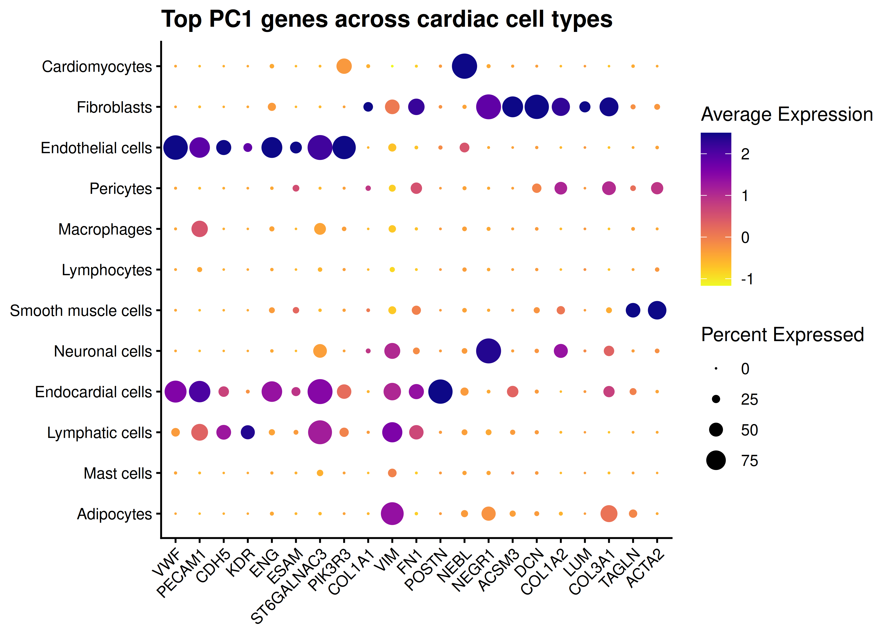
reorder_GO_by_pvalue <- function(enrichGO_result) {
go_results <- enrichGO_result@result
go_results_sorted <- go_results[order(go_results$p.adjust), ]
enrichGO_result@result <- go_results_sorted
return(enrichGO_result)
}res$metric <- res$logFC*-log10(res$PValue)
res$gene <- rownames(res)
entrezid <- bitr(res$gene, fromType="SYMBOL", toType="ENTREZID", OrgDb="org.Hs.eg.db", drop = TRUE)
res <- merge(res, entrezid, by.x = "gene", by.y = "SYMBOL", all.x = TRUE)
res[duplicated(res$metric) | duplicated(res$metric, fromLast = TRUE),][1] gene logFC logCPM F PValue FDR metric ENTREZID
<0 rows> (or 0-length row.names)res <- res[!duplicated(res$metric), ]
ranked_genes <- res[!is.na(res$ENTREZID), ]
genelist <- ranked_genes$metric
names(genelist) <-ranked_genes$ENTREZID
genelist <- genelist[order(genelist, decreasing = T)]top_up <- res |>
dplyr::arrange(dplyr::desc(metric)) |>
dplyr::slice(1:20)
# top down (most negative metric)
top_down <- res |>
dplyr::arrange(metric) |>
dplyr::slice(1:20)
genes_up <- top_up$gene
genes_down <- top_down$gene
genes_up [1] "PLXDC2" "SCUBE3" "RP11-54O7.3" "SUSD2" "PPP1R14A"
[6] "TMEM37" "H19" "CRLF1" "CLIC3" "ALDH1A1"
[11] "CD248" "FGF12" "OSR1" "MYLK2" "PRR15"
[16] "IFITM10" "SAMD11" "IL18" "MRC1" "EMB" genes_down [1] "INHBA" "CSF3" "SELE" "TNFSF15"
[5] "CXCL5" "RP13-1039J1.2" "IL1B" "ADTRP"
[9] "CDCP1" "KCNAB1" "RGS5" "CXCL8"
[13] "ITGAX" "FOXF1" "IL6" "MTND2P28"
[17] "GREB1L" "TYW1B" "PTPN22" "NLGN1" # Keep only genes present in logCPM
genes_ordered <- c(genes_up, genes_down)
genes_ordered <- genes_ordered[genes_ordered %in% rownames(logCPM)]
mat_metric <- logCPM[genes_ordered, , drop = FALSE]
annotation_col <- data.frame(
Group = group,
row.names = colnames(mat_z)
)
pheatmap(
mat_metric,
scale = "row",
fontsize_row = 9,
fontsize = 10,
annotation_col = annotation_col,
show_colnames = TRUE,
cluster_rows = F, # <-- no gene clustering
cluster_cols = TRUE, # <-- keep your column order (ord)
main = "Top 20 up and top 20 down genes"
)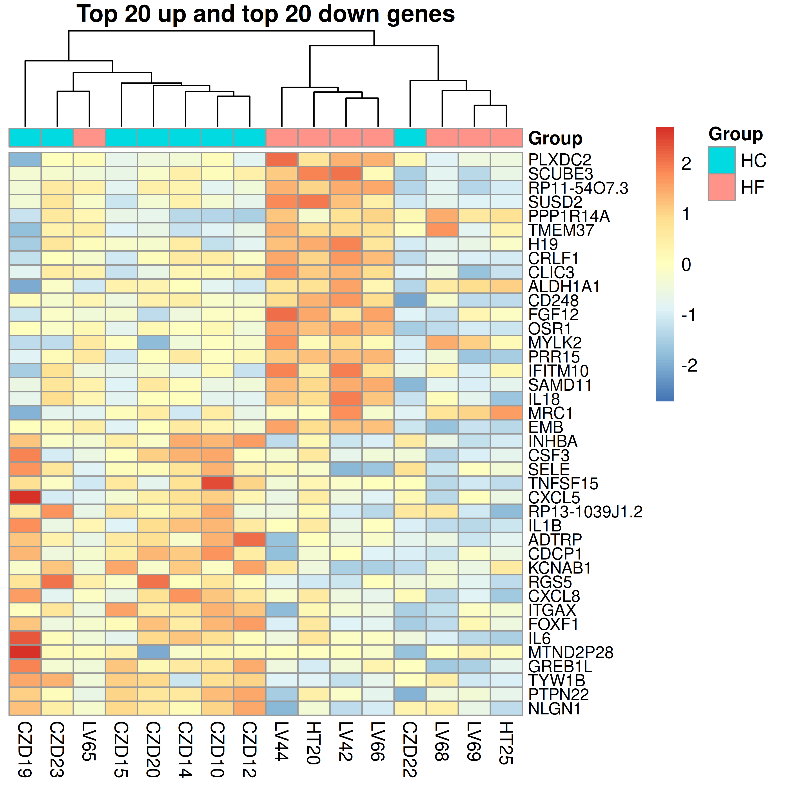
rownames(meta) <- meta$Sample
group <- meta[colnames(mat_metric), "Group", drop = TRUE]
group <- factor(group, levels = c("HC", "HF"))
ord <- order(group) # HC first, then HF
mat_metric_ord <- mat_metric[, ord, drop = FALSE]
annotation_col <- data.frame(Group = group)
rownames(annotation_col) <- colnames(mat_metric)
annotation_col_ord <- annotation_col[colnames(mat_metric_ord), , drop = FALSE]
pheatmap(
mat_metric_ord,
scale = "row",
fontsize_row = 9,
fontsize = 10,
annotation_col = annotation_col_ord,
show_colnames = TRUE,
cluster_rows = F, # genes clustered
cluster_cols = FALSE, # columns NOT clustered
main = "Top 20 up and top 20 down genes"
)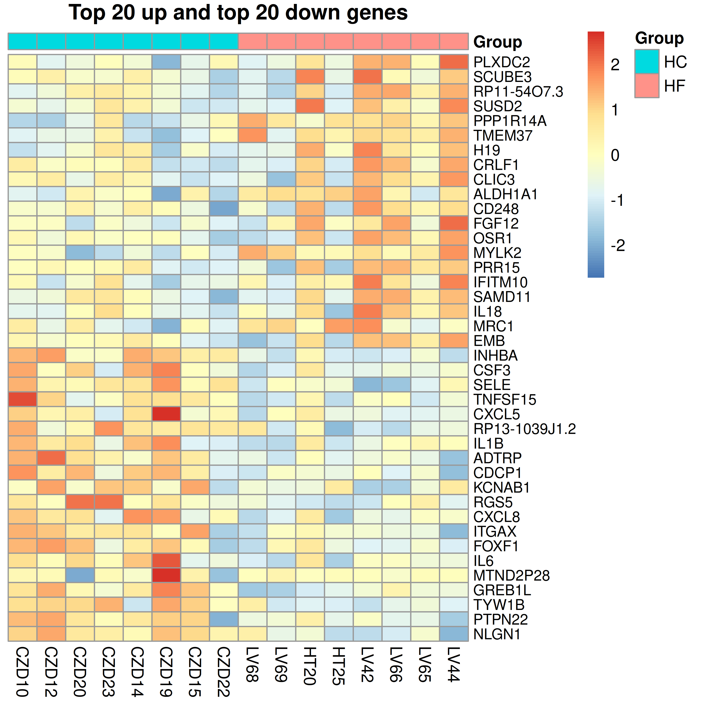
GSEA_GO <- gseGO(geneList = genelist,
OrgDb = org.Hs.eg.db,
ont = "ALL",
keyType = "ENTREZID",
nPermSimple = 1000,
minGSSize = 10)
GSEA_GO <- reorder_GO_by_pvalue(GSEA_GO)dotplot(GSEA_GO, showCategory = 10, split=".sign", title = "GO Enrichment Analysis", label_format = 40, font.size = 14) +
theme(plot.title = element_text( face = "bold", size = 18, hjust = 0.5),
axis.text.y = element_text(face = "bold", lineheight = 0.65, size = 12),
axis.text.x = element_text(size = 9),
strip.text = element_text(face = "bold", size = 18)) +
facet_grid(.~.sign)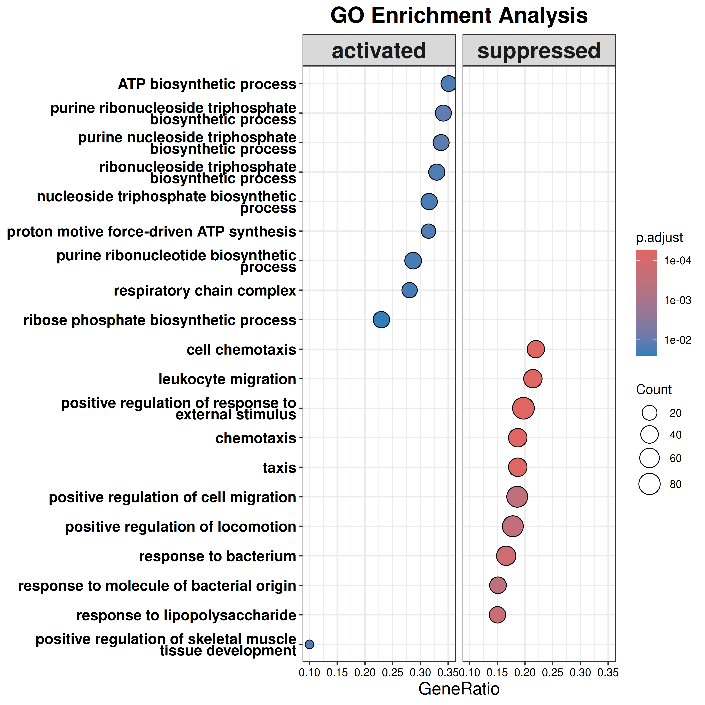
classify_terms <- function(df) {
df$sign <- ifelse(df$NES > 0, "activated", "suppressed")
return(df)
}GSEA_GO@result <- classify_terms(GSEA_GO@result)
activated_terms <- subset(GSEA_GO@result, sign == "activated")
suppressed_terms <- subset(GSEA_GO@result, sign == "suppressed")
GSEA_GO_activated <- GSEA_GO
GSEA_GO_activated@result <- activated_terms
GSEA_GO_activated <- pairwise_termsim(GSEA_GO_activated)
GSEA_GO_suppressed <- GSEA_GO
GSEA_GO_suppressed@result <- suppressed_terms
GSEA_GO_suppressed <- pairwise_termsim(GSEA_GO_suppressed)
p1 <- emapplot(GSEA_GO_activated, showCategory = 50, size_category = 0.7, min_edge = 0.25) +
ggtitle("Activated Terms") +
theme(plot.title = element_text(face = "bold", size = 18, hjust = 0.5))
p2 <- emapplot(GSEA_GO_suppressed, showCategory = 50, size_category = 0.7, min_edge = 0.25) +
ggtitle("Suppressed Terms") +
theme(plot.title = element_text(face = "bold", size = 18, hjust = 0.5))
combined_plot <- p1 | p2
print(combined_plot)
GSEA_GO_simplified <- clusterProfiler::simplify(
GSEA_GO,
cutoff = 0.75,
by = "p.adjust",
select_fun = min,
measure = "Wang",
semData = NULL
)
dotplot(GSEA_GO_simplified, showCategory = 10, split=".sign", title = "GO Enrichment Analysis", label_format = 40, font.size = 14) +
theme(plot.title = element_text( face = "bold", size = 18, hjust = 0.5),
axis.text.y = element_text(face = "bold", lineheight = 0.65, size = 12),
axis.text.x = element_text(size = 9),
strip.text = element_text(face = "bold", size = 18)) +
facet_grid(.~.sign)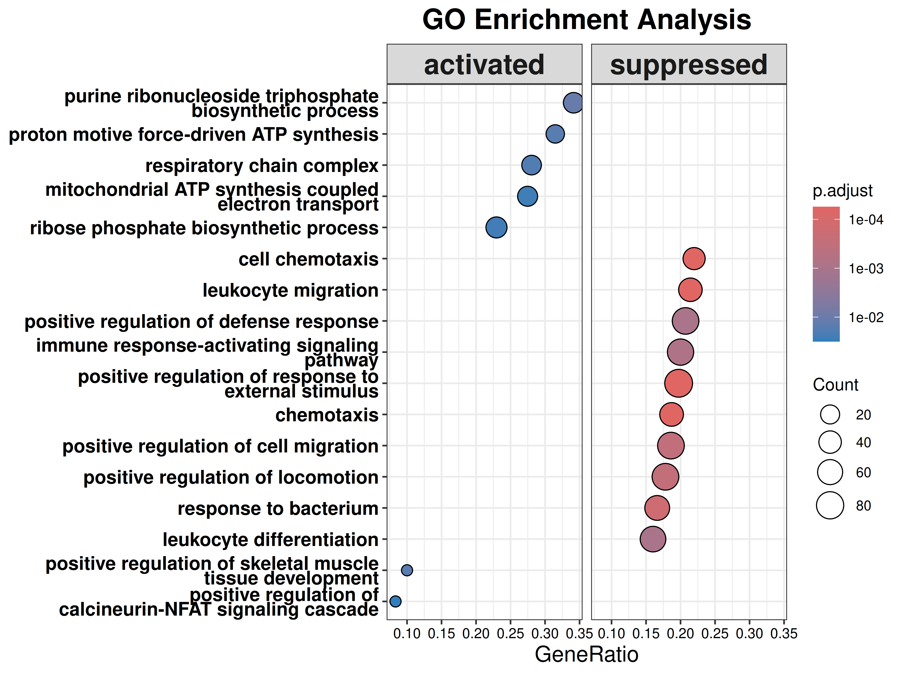
GSEA_GO_simplified@result <- classify_terms(GSEA_GO_simplified@result)
activated_terms <- subset(GSEA_GO_simplified@result, sign == "activated")
suppressed_terms <- subset(GSEA_GO_simplified@result, sign == "suppressed")
GSEA_GO_activated <- GSEA_GO_simplified
GSEA_GO_activated@result <- activated_terms
GSEA_GO_activated <- pairwise_termsim(GSEA_GO_activated)
GSEA_GO_suppressed <- GSEA_GO_simplified
GSEA_GO_suppressed@result <- suppressed_terms
GSEA_GO_suppressed <- pairwise_termsim(GSEA_GO_suppressed)
p1 <- emapplot(GSEA_GO_activated, showCategory = 50, size_category = 0.7, min_edge = 0.25) +
ggtitle("Activated Terms") +
theme(plot.title = element_text(face = "bold", size = 18, hjust = 0.5))
p2 <- emapplot(GSEA_GO_suppressed, showCategory = 50, size_category = 0.7, min_edge = 0.25) +
ggtitle("Suppressed Terms") +
theme(plot.title = element_text(face = "bold", size = 18, hjust = 0.5))
combined_plot <- p1 | p2
print(combined_plot)
p1 <- ridgeplot(GSEA_GO_simplified, showCategory = 30) + labs(x = "enrichment distribution")
print(p1)
reorder_GO_by_NES <- function(enrichGO_result) {
go_results <- enrichGO_result@result
go_results_sorted <- go_results[order(desc(go_results$NES)), ]
enrichGO_result@result <- go_results_sorted
return(enrichGO_result)
}default_labeller <- function(n) {
function(str){
str <- gsub("_", " ", str)
ep_str_wrap(str, n)
}
}barplot.enrichResult <- function (height, x = "Count", color = "p.adjust", showCategory = 8,
font.size = 12, title = "", label_format = 30, ...)
{
object <- height
colorBy <- match.arg(color, c("pvalue", "p.adjust", "qvalue"))
if (x == "geneRatio" || x == "GeneRatio") {
x <- "GeneRatio"
}
else if (x == "count" || x == "Count") {
x <- "Count"
}
df <- fortify(object, showCategory = showCategory, by = x,
...)
if (colorBy %in% colnames(df)) {
p <- ggplot(df, aes_string(x = x, y = "Description",
fill = colorBy)) + theme_dose(font.size) + set_enrichplot_color(type = "fill",
name = color)
}
else {
p <- ggplot(df, aes_string(x = x, y = "Description",
fill = "Description")) + theme_dose(font.size) +
theme(legend.position = "none")
}
label_func <- default_labeller(label_format)
if (is.function(label_format)) {
label_func <- label_format
}
p + geom_col() + scale_y_discrete(labels = label_func) +
ggtitle(title) + ylab(NULL)
}ep_str_wrap <- function(string, width) {
x <- gregexpr(' ', string)
vapply(seq_along(x),
FUN = function(i) {
y <- x[[i]]
n <- nchar(string[i])
len <- (c(y,n) - c(0, y)) ## length + 1
idx <- len > width
j <- which(!idx)
if (length(j) && max(j) == length(len)) {
j <- j[-length(j)]
}
if (length(j)) {
idx[j] <- len[j] + len[j+1] > width
}
idx <- idx[-length(idx)] ## length - 1
start <- c(1, y[idx] + 1)
end <- c(y[idx] - 1, n)
words <- substring(string[i], start, end)
paste0(words, collapse="\n")
},
FUN.VALUE = character(1)
)
}barplot.enrichResult(reorder_GO_by_NES(GSEA_GO_simplified), x="NES", showCategory = 100, label_format = 45) +
ggtitle("Gene Ontology Enrichment Analysis\nHigh mPAP-associated terms") +
theme(plot.title = element_text(face = "bold", size = 14, hjust = 0.5))
top_up <- GSEA_GO_simplified@result %>%
dplyr::filter(NES > 0) %>%
dplyr::arrange(desc(NES)) %>%
dplyr::slice(1:10)
top_down <- GSEA_GO_simplified@result %>%
dplyr::filter(NES < 0) %>%
dplyr::arrange(NES) %>% # most negative first
dplyr::slice(1:10)
top_terms <- dplyr::bind_rows(top_up, top_down)
GSEA_GO_top20 <- GSEA_GO_simplified
GSEA_GO_top20@result <- top_terms
barplot.enrichResult(reorder_GO_by_NES(GSEA_GO_top20), x='NES', showCategory = 100, label_format = 45) +
ggtitle("Gene Ontology Enrichment Analysis\nHigh mPAP-associated terms") +
theme(plot.title = element_text(face = "bold", size = 14, hjust = 0.5),
axis.title.x = element_text(size = 14)) +
labs(x = "Normalized Enrichment Score")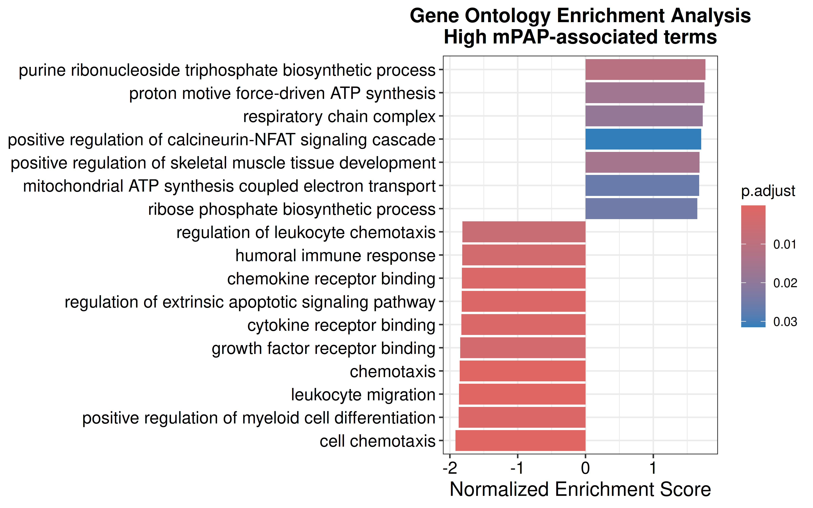
keep_samples <- c("CZD15", "LV69", "HT25", "CZD22", "LV68")
# subset to those samples
idx <- meta$Sample %in% keep_samples
meta_sub <- meta[idx, , drop = FALSE]
counts_sub <- counts_mat[, idx, drop = FALSE]
# edgeR
group <- factor(meta_sub$Group)
y <- DGEList(counts = counts_sub, samples = meta_sub)
y$samples$group <- group
keep_genes <- filterByExpr(y, group = group, min.count = 20)
y <- y[keep_genes, , keep.lib.sizes = FALSE]
y <- calcNormFactors(y)
group <- relevel(group, ref = "HC")
y$samples$group <- group
design <- model.matrix(~ 0 + group)
colnames(design) <- levels(group)
contrast <- makeContrasts(HF_vs_HC = HF - HC, levels = design)
y <- estimateDisp(y, design)
fit <- glmQLFit(y, design)
qlf <- glmQLFTest(fit, contrast = contrast)
res2 <- topTags(qlf, n = Inf)$tableres2_df <- res2 %>%
mutate(
Gene = rownames(res2),
negLogFDR = -log10(FDR),
sig = FDR < 0.05 & abs(logFC) > 0.05
)
ggplot(res2_df, aes(x = logFC, y = negLogFDR)) +
geom_point(aes(color = sig), alpha = 0.7, size = 1.5) +
scale_color_manual(values = c("FALSE" = "grey70", "TRUE" = "red")) +
geom_hline(yintercept = -log10(0.05), linetype = "dashed") +
geom_vline(xintercept = c(-1, 1), linetype = "dashed") +
theme_minimal() +
labs(
title = "Volcano plot: HF vs HC (CZD15, LV69, HT25, CZD22, LV68)",
x = "log2 fold change",
y = "-log10 FDR"
)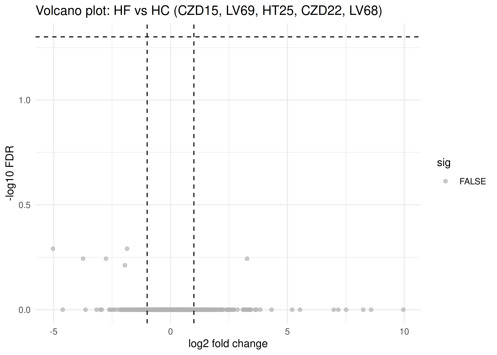
sessionInfo()R version 4.5.2 (2025-10-31)
Platform: x86_64-pc-linux-gnu
Running under: Ubuntu 24.04.3 LTS
Matrix products: default
BLAS: /usr/lib/x86_64-linux-gnu/openblas-pthread/libblas.so.3
LAPACK: /usr/lib/x86_64-linux-gnu/openblas-pthread/libopenblasp-r0.3.26.so; LAPACK version 3.12.0
locale:
[1] LC_CTYPE=en_US.UTF-8 LC_NUMERIC=C
[3] LC_TIME=en_US.UTF-8 LC_COLLATE=en_US.UTF-8
[5] LC_MONETARY=en_US.UTF-8 LC_MESSAGES=en_US.UTF-8
[7] LC_PAPER=en_US.UTF-8 LC_NAME=C
[9] LC_ADDRESS=C LC_TELEPHONE=C
[11] LC_MEASUREMENT=en_US.UTF-8 LC_IDENTIFICATION=C
time zone: Etc/UTC
tzcode source: system (glibc)
attached base packages:
[1] stats4 stats graphics grDevices datasets utils methods
[8] base
other attached packages:
[1] DOSE_4.4.0 enrichplot_1.30.4
[3] dorothea_1.22.0 OmnipathR_3.18.2
[5] decoupleR_2.16.0 reactable_0.4.5
[7] edgeR_4.8.0 limma_3.66.0
[9] ReactomePA_1.54.0 AnnotationHub_4.0.0
[11] BiocFileCache_3.0.0 dbplyr_2.5.1
[13] org.Hs.eg.db_3.22.0 AnnotationDbi_1.72.0
[15] clusterProfiler_4.18.2 gprofiler2_0.2.4
[17] harmony_1.2.4 Rcpp_1.1.0
[19] clustree_0.5.1 ggraph_2.2.2
[21] statmod_1.5.1 patchwork_1.3.2
[23] scater_1.38.0 scuttle_1.20.0
[25] Matrix.utils_0.9.7 RColorBrewer_1.1-3
[27] scales_1.4.0 knitr_1.50
[29] gridExtra_2.3 png_0.1-8
[31] pheatmap_1.0.13 reshape2_1.4.5
[33] lubridate_1.9.4 forcats_1.0.1
[35] stringr_1.6.0 purrr_1.2.0
[37] tidyr_1.3.1 tibble_3.3.0
[39] tidyverse_2.0.0 magrittr_2.0.4
[41] ggplot2_4.0.1 dplyr_1.1.4
[43] scCustomize_3.2.2 scDblFinder_1.24.0
[45] Matrix_1.6-5 DropletUtils_1.30.0
[47] SingleCellExperiment_1.32.0 SummarizedExperiment_1.40.0
[49] Biobase_2.70.0 GenomicRanges_1.62.0
[51] Seqinfo_1.0.0 IRanges_2.44.0
[53] S4Vectors_0.48.0 BiocGenerics_0.56.0
[55] generics_0.1.4 MatrixGenerics_1.22.0
[57] matrixStats_1.5.0 SeuratObject_5.0.2
[59] Seurat_4.4.0 readxl_1.4.5
[61] readr_2.1.6 here_1.0.2
loaded via a namespace (and not attached):
[1] R.methodsS3_1.8.2 vroom_1.6.7
[3] progress_1.2.3 goftest_1.2-3
[5] Biostrings_2.78.0 HDF5Array_1.38.0
[7] vctrs_0.6.5 ggtangle_0.0.9
[9] spatstat.random_3.4-3 digest_0.6.39
[11] shape_1.4.6.1 git2r_0.36.2
[13] ggrepel_0.9.6 deldir_2.0-4
[15] parallelly_1.45.1 bcellViper_1.46.0
[17] renv_1.1.5 fontLiberation_0.1.0
[19] MASS_7.3-65 httpuv_1.6.16
[21] qvalue_2.42.0 withr_3.0.2
[23] ggrastr_1.0.2 ggfun_0.2.0
[25] xfun_0.54 survival_3.8-3
[27] memoise_2.0.1 ggbeeswarm_0.7.3
[29] gson_0.1.0 janitor_2.2.1
[31] systemfonts_1.3.1 tidytree_0.4.6
[33] zoo_1.8-14 GlobalOptions_0.1.3
[35] pbapply_1.7-4 R.oo_1.27.1
[37] prettyunits_1.2.0 rematch2_2.1.2
[39] KEGGREST_1.50.0 promises_1.5.0
[41] otel_0.2.0 httr_1.4.7
[43] restfulr_0.0.16 globals_0.18.0
[45] fitdistrplus_1.2-4 rhdf5filters_1.22.0
[47] rhdf5_2.54.0 rstudioapi_0.17.1
[49] UCSC.utils_1.6.0 miniUI_0.1.2
[51] reactome.db_1.94.0 curl_7.0.0
[53] ScaledMatrix_1.18.0 h5mread_1.2.1
[55] polyclip_1.10-7 SparseArray_1.10.4
[57] xtable_1.8-4 evaluate_1.0.5
[59] S4Arrays_1.10.1 hms_1.1.4
[61] irlba_2.3.5.1 filelock_1.0.3
[63] colorspace_2.1-2 ROCR_1.0-11
[65] reticulate_1.44.1 spatstat.data_3.1-9
[67] lmtest_0.9-40 snakecase_0.11.1
[69] ggtree_4.0.1 later_1.4.4
[71] viridis_0.6.5 lattice_0.22-7
[73] spatstat.geom_3.6-1 future.apply_1.20.0
[75] scattermore_1.2 XML_3.99-0.20
[77] cowplot_1.2.0 RcppAnnoy_0.0.22
[79] pillar_1.11.1 nlme_3.1-168
[81] compiler_4.5.2 beachmat_2.26.0
[83] stringi_1.8.7 tensor_1.5.1
[85] GenomicAlignments_1.46.0 plyr_1.8.9
[87] crayon_1.5.3 abind_1.4-8
[89] BiocIO_1.20.0 gridGraphics_0.5-1
[91] locfit_1.5-9.12 sp_2.2-0
[93] graphlayouts_1.2.2 bit_4.6.0
[95] fastmatch_1.1-6 whisker_0.4.1
[97] codetools_0.2-20 BiocSingular_1.26.1
[99] bslib_0.9.0 paletteer_1.6.0
[101] plotly_4.11.0 mime_0.13
[103] splines_4.5.2 circlize_0.4.16
[105] tidydr_0.0.6 sparseMatrixStats_1.22.0
[107] cellranger_1.1.0 utf8_1.2.6
[109] grr_0.9.5 blob_1.2.4
[111] BiocVersion_3.22.0 fs_1.6.6
[113] checkmate_2.3.3 listenv_0.10.0
[115] DelayedMatrixStats_1.32.0 logger_0.4.1
[117] ggplotify_0.1.3 tzdb_0.5.0
[119] tweenr_2.0.3 pkgconfig_2.0.3
[121] tools_4.5.2 cachem_1.1.0
[123] cigarillo_1.0.0 RSQLite_2.4.5
[125] rvest_1.0.5 viridisLite_0.4.2
[127] DBI_1.2.3 graphite_1.56.0
[129] fastmap_1.2.0 rmarkdown_2.30
[131] grid_4.5.2 ica_1.0-3
[133] Rsamtools_2.26.0 sass_0.4.10
[135] ggprism_1.0.7 BiocManager_1.30.27
[137] dotCall64_1.2 graph_1.88.0
[139] RANN_2.6.2 farver_2.1.2
[141] scatterpie_0.2.6 tidygraph_1.3.1
[143] yaml_2.3.11 workflowr_1.7.2
[145] rtracklayer_1.70.0 cli_3.6.5
[147] leiden_0.4.3.1 lifecycle_1.0.4
[149] uwot_0.2.4 sessioninfo_1.2.3
[151] backports_1.5.0 bluster_1.20.0
[153] BiocParallel_1.44.0 timechange_0.3.0
[155] gtable_0.3.6 rjson_0.2.23
[157] ggridges_0.5.7 progressr_0.18.0
[159] ape_5.8-1 parallel_4.5.2
[161] jsonlite_2.0.0 bitops_1.0-9
[163] bit64_4.6.0-1 xgboost_3.1.2.1
[165] Rtsne_0.17 yulab.utils_0.2.2
[167] spatstat.utils_3.2-0 BiocNeighbors_2.4.0
[169] zip_2.3.3 jquerylib_0.1.4
[171] metapod_1.18.0 GOSemSim_2.36.0
[173] dqrng_0.4.1 spatstat.univar_3.1-5
[175] R.utils_2.13.0 lazyeval_0.2.2
[177] shiny_1.12.0 htmltools_0.5.9
[179] GO.db_3.22.0 sctransform_0.4.2
[181] rappdirs_0.3.3 glue_1.8.0
[183] tcltk_4.5.2 spam_2.11-1
[185] httr2_1.2.1 XVector_0.50.0
[187] gdtools_0.4.4 RCurl_1.98-1.17
[189] treeio_1.34.0 rprojroot_2.1.1
[191] scran_1.38.0 igraph_2.2.1
[193] R6_2.6.1 ggiraph_0.9.2
[195] labeling_0.4.3 cluster_2.1.8.1
[197] Rhdf5lib_1.32.0 aplot_0.2.9
[199] GenomeInfoDb_1.46.1 DelayedArray_0.36.0
[201] tidyselect_1.2.1 vipor_0.4.7
[203] xml2_1.5.1 ggforce_0.5.0
[205] fontBitstreamVera_0.1.1 future_1.68.0
[207] rsvd_1.0.5 KernSmooth_2.23-26
[209] S7_0.2.1 fontquiver_0.2.1
[211] data.table_1.17.8 htmlwidgets_1.6.4
[213] fgsea_1.36.0 rlang_1.1.6
[215] spatstat.sparse_3.1-0 spatstat.explore_3.6-0
[217] ggnewscale_0.5.2 beeswarm_0.4.0